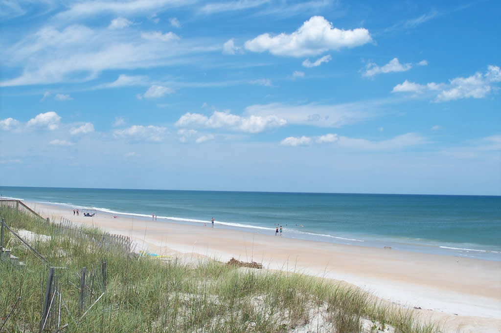

Tops'l Island Activities
Lean into leisure, y'all
Our Community is Your Community
Come join us every other Tuesday at Topsail Beach Town Hall for Bingo at the Beach! Grace Anne Talbert, born and raised in Surf City, tends to take the big door prize every dang time, but we don't let that keep us down. If you can't beat 'em, join 'em! We'll see you there!
FIG. 2
World Class Surf Fishing
Head on down to Thomas Tackle & Seafood for live bait, rent a rod and belt for the night and set up some surf fishing. From makos to striper to spot tail the size of semis, you never know what you might pull out of the waves.
If standing in the sand sounds like a young man's game, the nearby pier offers plenty of prime real estate to pull up a chair and drop a line. NC record flounder was pulled out of the very waters below Hugh's Hotdogs just past Surf City Ocean Pier! Now, Hugh's wife Linda says to take that story with as much salt as he sprinkles on his crispy crinkle fries, but let yourself be the judge.
FIG. 3
Sea Turtle Sanctuary
Tops'l is home to the Karen Beasley Sea Turtle Rescue and Rehabilitation Center, a nonprofit organization dedicated to the conservation and protection of marine turtles. Book a reservation to tour the facility and learn more about how you can lend a hand to support our precious Loggerheads today!